Loading...
Given a sequence of random variables, we wish to develop a method for determining the existence of anomalies.
Specifically, as the variables arrive one by one, we test the exchangeability assumption for the sequence, which states that the joint distribution for these variables is invariant under any permutation of the indices. One method for anomaly detection involves using a Martingale, a sequence of random variables such that the expectation of a variable is equal to the value of the variable at the last point in time. In particular, the martingale here models the degree to which the data violates the null hypothesis given by the exchangeability assumption.
Our study focuses on three general types of anomalies.

We construct various datasets with these three structures to evaluate the efficacy of our methods. We also examine real-life time series datasets from Twitter giving counts for the number of Tweet mentions of large, publicly-trade companies (e.g. AAPL, AMZN, CVS, FB) over five-minute intervals.
Here is our generalized, two-step procedure for analyzing a dataset, constructing Martingales, and detecting anomalies. We wrap all of our methods in an AnomalyDetector class, whose objects can be instantiated with two main customizable options – (1) a strangeness function and (2) a Martingale construction method.
Importing the training examples one by one and generating a list of corresponding p-values.

Constructing a Martingale from the sequence of p-values
This general algorithm was first introduced by Vovk et al. in [1]. In this project, we add our own customizations to answer the specific questions we posed.
We compare the relative efficacy of different strangeness functions for Part One of the algorithm in generating Martingales.
Here are the four different strangeness functions we examine.
We first test to see how the four strangeness functions perform on non-anomalous data, as a control for our experiment. The data is simply a time series in which each point comes from the Norm(0, 1) distribution. Ideally, we want the generated Martingales to be small in value. Here is the generated data:
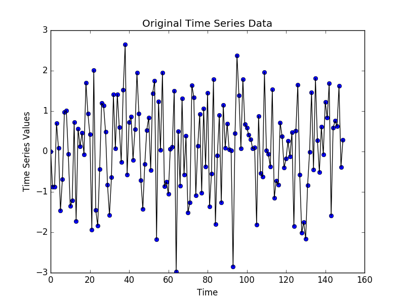These four graphs chart the performance of the strangeness functions, tracking the respective Martingale values over time. Note that in this case, the values all get smaller over time, which leads the algorithm to not identify any anomalies. This is exactly what we want.
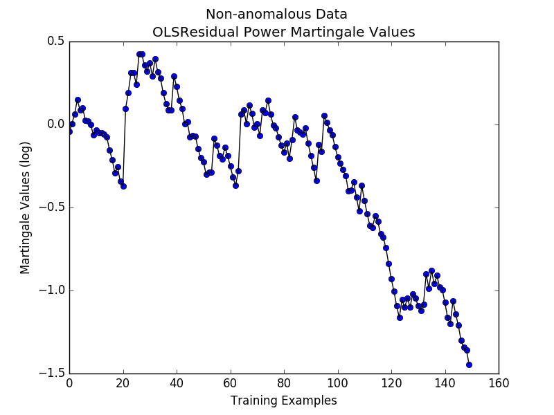 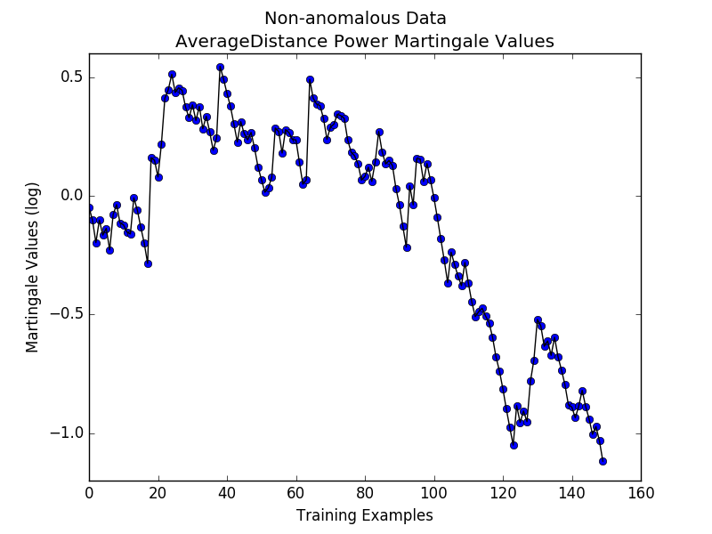
We now look at how the strangeness functions perform on anomalous data.
Here is a graph of our self-generated time series data containing the random outlier anomaly. The 'change points' are denoted by dashed red lines:
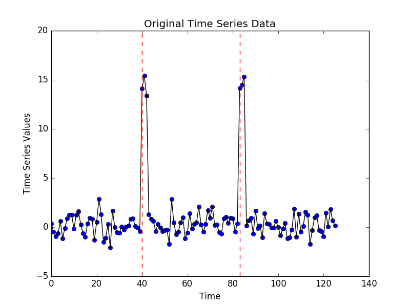These are plots of the Martingales produced by the four different strangeness functions for the above dataset:
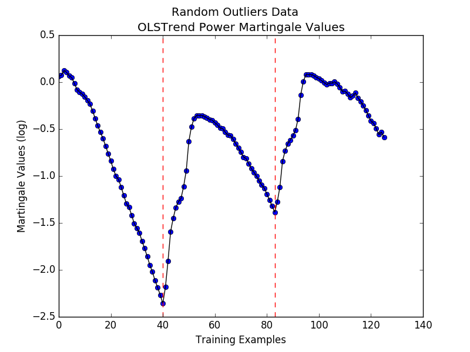
 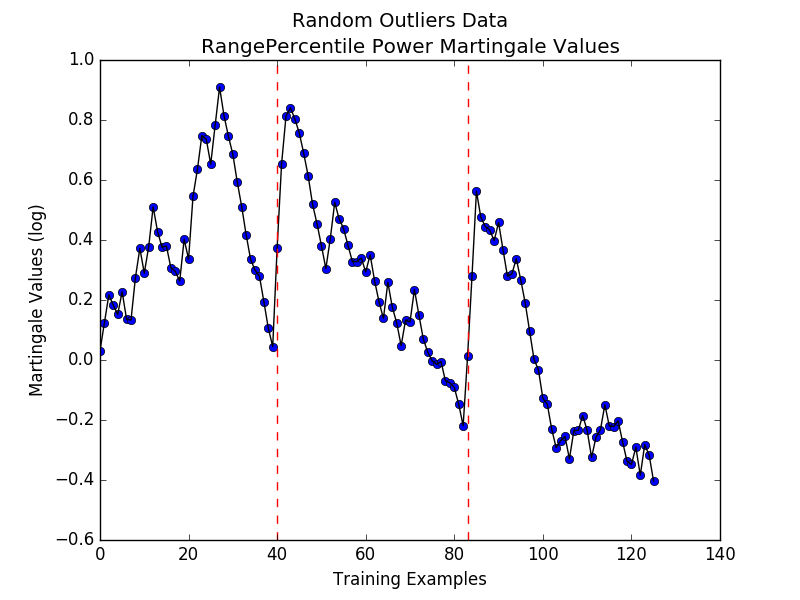
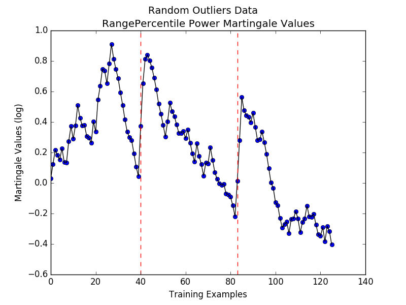
All four strangeness functions produce Martingales that locally peak right after an outlier occurs in the time series data. However, due to the fact that there are very few outliers, these peaks for Average Distance, Range Percentile, and OLS Trend are not actually high enough to be global maximums, which is undesirable. Instead, we see that OLS Residual performs the best, which is expected since the difference between a random outliers’ expected value and its predicted value should be significantly large.
Here is a graph of our self-generated time series data containing the sudden gap anomaly. The 'change points' are denoted by dashed red lines:
These are plots of the Martingales produced by the four different strangeness functions for the above dataset:
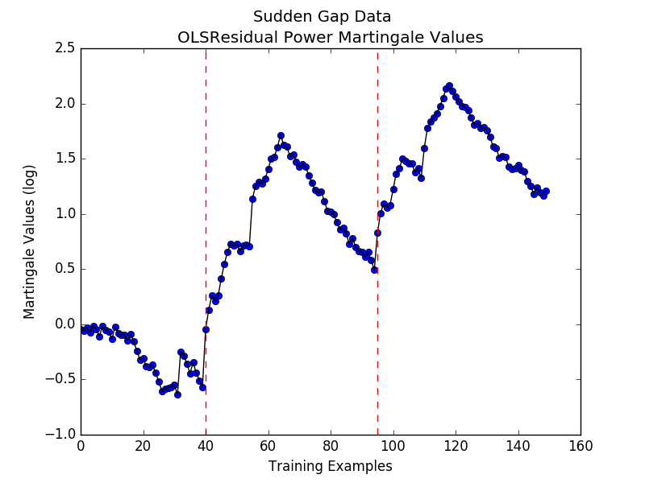 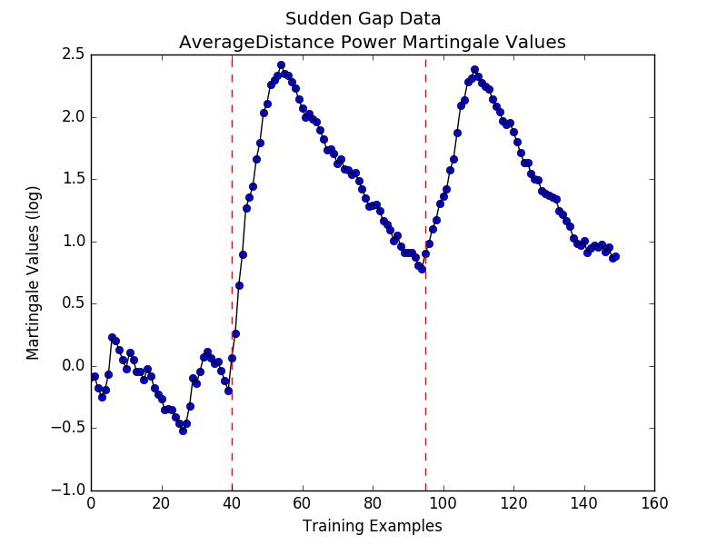 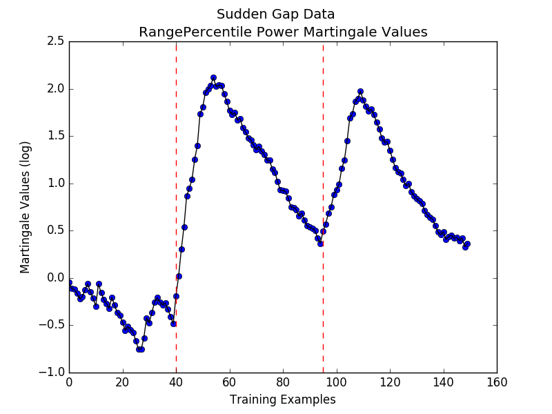All four methods seem to perform well for this type of anomaly; they all have peak Martingales after the appearance of a gap. Note that Average Distance produces the highest-valued Martingale.
Here is a graph of our self-generated time series data containing the slope change anomaly. The 'change points' are denoted by dashed red lines:
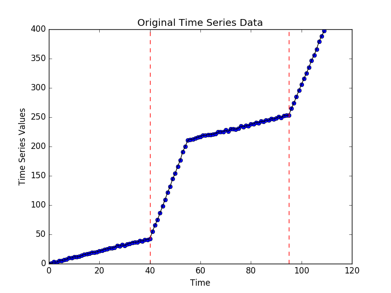These are plots of the Martingales produced by the four different strangeness functions for the above dataset:
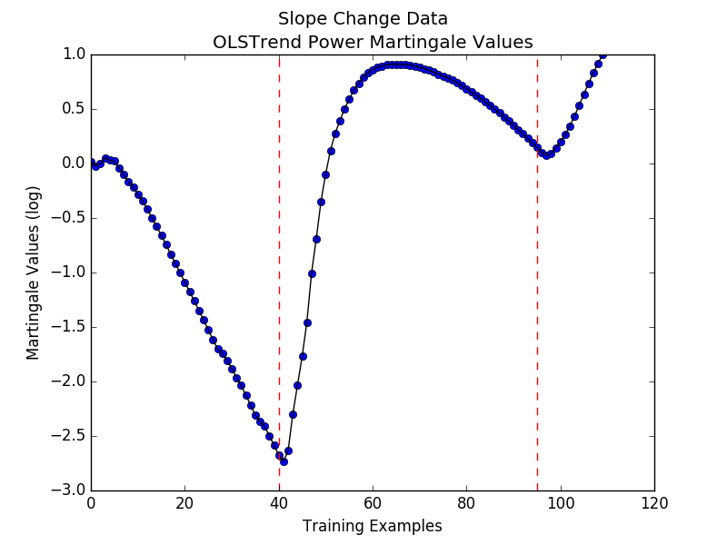 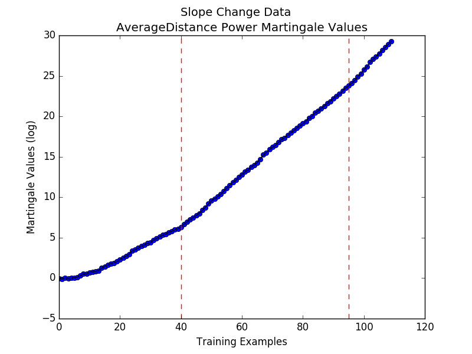 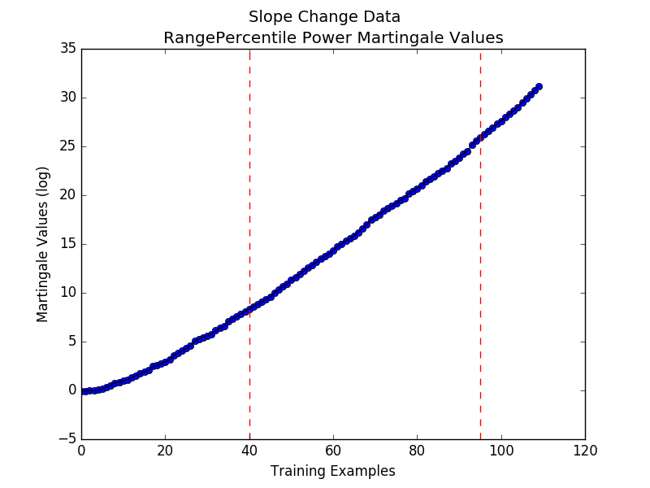Average Distance and Range Percentile perform poorly, as they start increasing before the slope changes. OLS Trend seems to most accurately reflects the patterns of the slope changes, which is understandable given that this metric measures slope fluctuations.
We evaluate the efficacy of anomaly detection for different Martingale thresholds. We expect there to be a tradeoff between the accuracy and the confidence of our methods. Here are some general points:
These are the resultant graphs for each of the three anomaly types.
As expected, the results from plotting the accuracies for the anomalous and non-anomalous data for various values of the threshold show that there is a tradeoff between accurately detecting anomalies and classifying “normal” data as non-anomalous.
Finally, we test the algorithm on a real-life dataset from Twitter. We obtained our time series data from this link. Each dataset corresponds to a count of the number of Twitter mentions of large, publicly-traded companies over an interval of 5 minutes. Each row in a dataset contains a timestamp for when the 5-minute interval starts and the corresponding counts for the associated company. The specific dataset we look at is for Amazon (AMZN). This is the time series, with the dashed red line denoting the start of the anomaly (as indicated by the collectors):
Note that it exhibits a Random Outliers structure. Thus, we chose to use the OLS Residual strangeness function for the Martingale-based anomaly detection algorithm. The results are below:
Our algorithm performs reasonably well; in particular, it is able to capture the presence of some sort of anomaly via a sudden peak in Martingales around the 2000-second point. However, note that the Martingale never reaches a value that is larger than the starting value; we conjecture that this may be because too much time passed before we reached the beginning of the anomalous data. We expect the algorithm to perform better on data that has anomalies towards the beginning of the time series.
All of our code can be downloaded from the GitHub link above. Here are descriptions of our main code files: